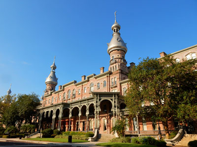
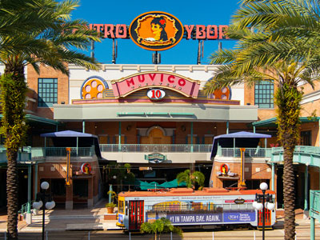
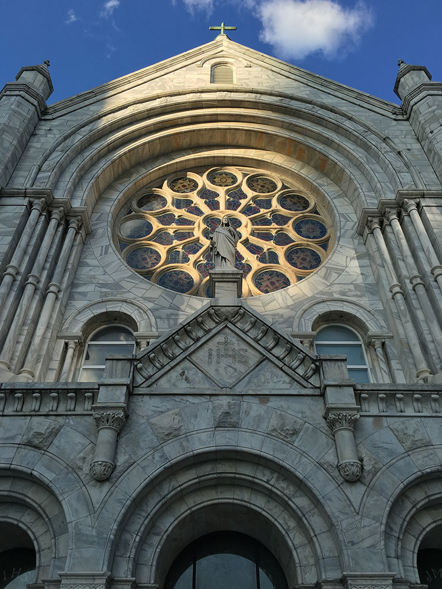
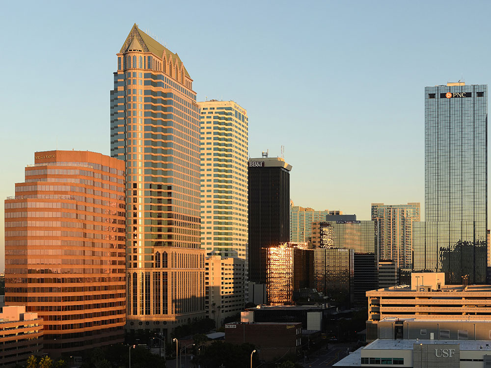
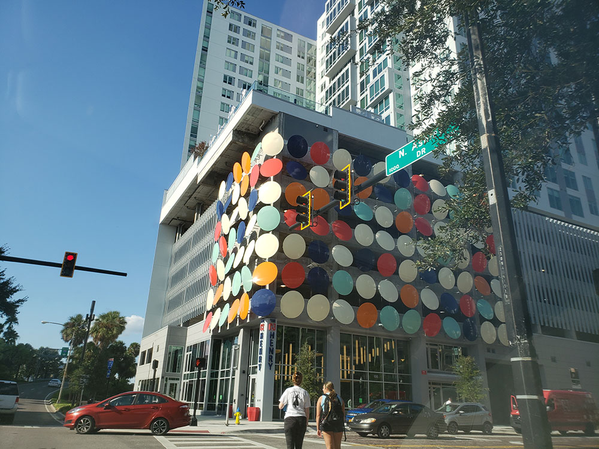

Major city on the Gulf Coast of Florida, sitting on Tampa Bay as the largest city in the Tampa Bay area, and is the third-most populated city in Florida
Featured Locations
Columbia Restaurant
Restaurant is the oldest continuously operated restaurant in Florida, the oldest Spanish restaurant in the United States and one of the largest Spanish restaurants in the world

Tsya 42, CC BY-SA 4.0, via Wikimedia Commons; Image Size Adjusted

Henry B. Plant Museum
Museum with exhibits focusing on historical Gilded Age tourism in the Tampa Bay area of Florida, the elite lifestyle of the hotel's guests, and its use during the Spanish-American War
Tampa Bay History Center
Smithsonian-affiliated history museum showcasing thousands of years of regional history through immersive exhibits, artifacts, maps, and stories that explore the people and cultures of Tampa Bay.
Tampa Riverwalk
2.6-mile-long open space and pedestrian trail development along the downtown Tampa waterfront

Peter K Burian, CC BY-SA 4.0, via Wikimedia Commons; Image Size Adjusted

Ybor City
Historic neighborhood founded in the 1880s by cigar manufacturers and populated by thousands of immigrants, mainly from Cuba, Spain, and Italy
Overview
Tampa is the largest city on Florida's Gulf Coast, on Tampa Bay, and it is known for its blend of Cuban, Spanish, and Italian immigrant heritage in Ybor City, once the cigar capital of the world. It is a major port, a center for finance and healthcare, and the home of Busch Gardens, the Florida Aquarium, and two professional sports teams that have won world championships. The city has a modern, walkable downtown along the Hillsborough River and a warm, sunny climate.
Visitors come to Tampa for Busch Gardens Tampa Bay, for the Tampa Riverwalk, and for the nightlife and restaurants of Ybor City, such as the historic Columbia Restaurant. They also come for the Henry B. Plant Museum, the Tampa Bay History Center, the Florida Aquarium, and the beaches of nearby Clearwater and St. Pete Beach.
History
The area was home to the Tocobaga people when Spanish explorers arrived in the 1500s, and the U.S. Army established Fort Brooke at the mouth of the Hillsborough River in 1824, which grew into the city of Tampa. The arrival of the railroad and Henry Plant's luxurious Tampa Bay Hotel in 1891 helped develop it, and in 1886 the Spanish cigar manufacturer Vicente Martínez-Ybor moved his factory to what became Ybor City, attracting thousands of Cuban, Spanish, and Italian workers. During the Spanish–American War in 1898, Theodore Roosevelt's Rough Riders camped in Tampa before sailing to Cuba. In the twentieth century, the city grew with shipping, phosphate, and tourism.
Sightseeing and Popular Landmarks
Ybor City is a National Historic Landmark District with brick streets, old cigar factories, and the Seventh Avenue entertainment district, and the Columbia Restaurant, opened in 1905, is the oldest restaurant in Florida. The Tampa Riverwalk is a 2.6-mile waterfront path connecting museums, parks, and restaurants, and the Henry B. Plant Museum is in the Moorish-style former Tampa Bay Hotel, with its minarets, at the University of Tampa. Busch Gardens Tampa Bay combines roller coasters with an African safari-style zoo.
Culture and Museums
The Tampa Bay History Center tells the story of the region from prehistory to the present, and the Henry B. Plant Museum shows the Gilded Age hotel and its furnishings. The Tampa Museum of Art, the Glazer Children's Museum, and the Museum of Science & Industry (MOSI) are other major museums, and the Straz Center for the Performing Arts and the Tampa Theatre, a 1926 movie palace, host shows. Tampa is also known for the Cuban sandwich, and for the Gasparilla Pirate Festival in January.
Parks
Tampa has an extensive network of parks along the water. Curtis Hixon Waterfront Park and Water Works Park are on the Riverwalk, and Bayshore Boulevard has a 4.5-mile sidewalk along the bay, one of the longest continuous sidewalks in the world. Hillsborough River State Park has trails and rapids, and Lettuce Lake Park has a boardwalk through a cypress swamp. The beaches of Clearwater, St. Pete Beach, and Fort De Soto Park are within an hour's drive.
Sports
Tampa has two major professional teams. The Tampa Bay Buccaneers of the NFL play at Raymond James Stadium and won Super Bowls in 2003 and 2021, the latter in their home stadium, and the Tampa Bay Lightning of the NHL play at Amalie Arena and won the Stanley Cup in 2004, 2020, and 2021. The Tampa Bay Rays of Major League Baseball play across the bay in St. Petersburg.
Seasons and Weather
Tampa has a humid subtropical climate. Summers are hot and humid, with highs in the low 90s°F and frequent afternoon thunderstorms, and winters are mild and dry, with highs in the 70s°F. The peak tourist season runs from December through April, and hurricane season runs from June to November, with major storms such as Hurricanes Helene and Milton in 2024.
This article uses material from Wikipedia as well as information from official tourism and institutional sources. Key references include Visit Tampa Bay, Busch Gardens Tampa Bay, Tampa Bay History Center, Henry B. Plant Museum, Tampa Bay Buccaneers, Tampa Bay Lightning, and National Weather Service Tampa Bay. Wikipedia material is from the articles "Tampa, Florida" and "Ybor City", and is available under the Creative Commons Attribution-Share-Alike License 3.0.




